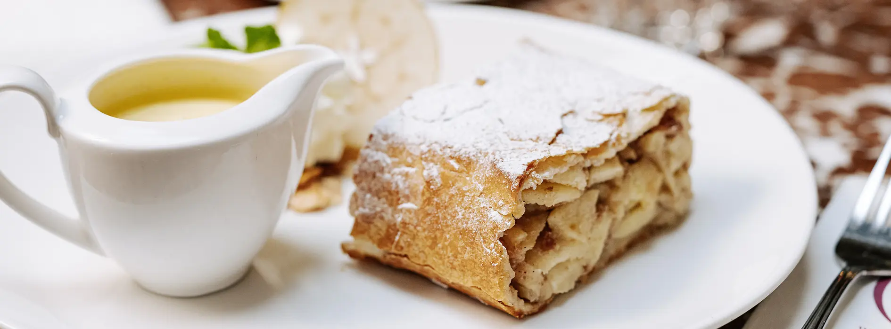
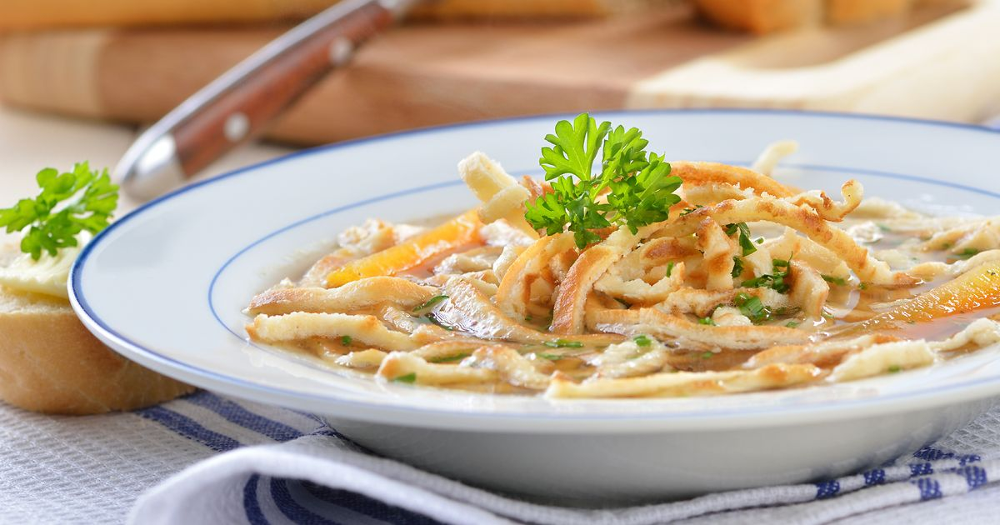
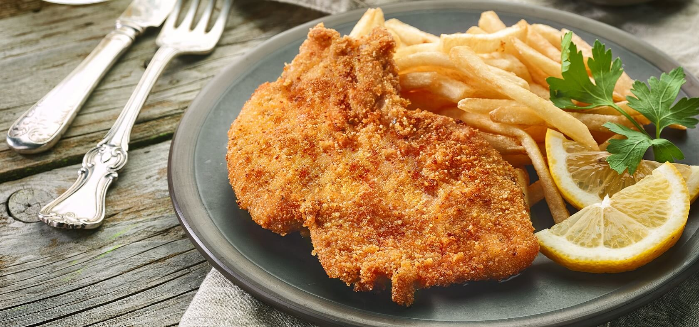
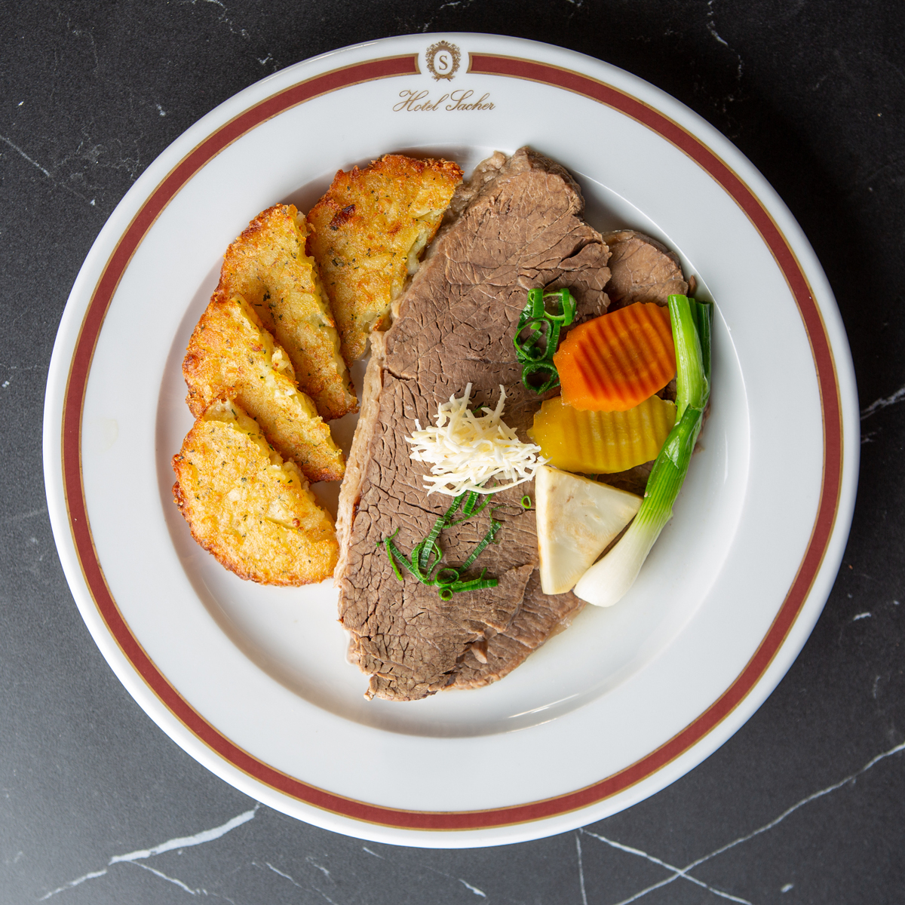
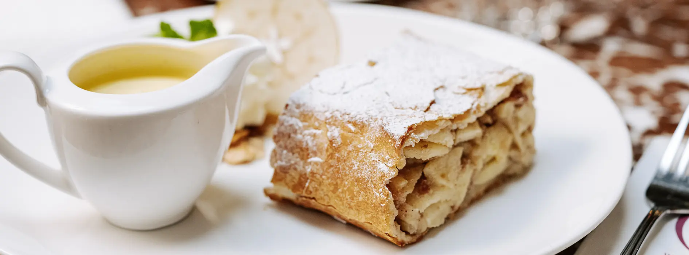
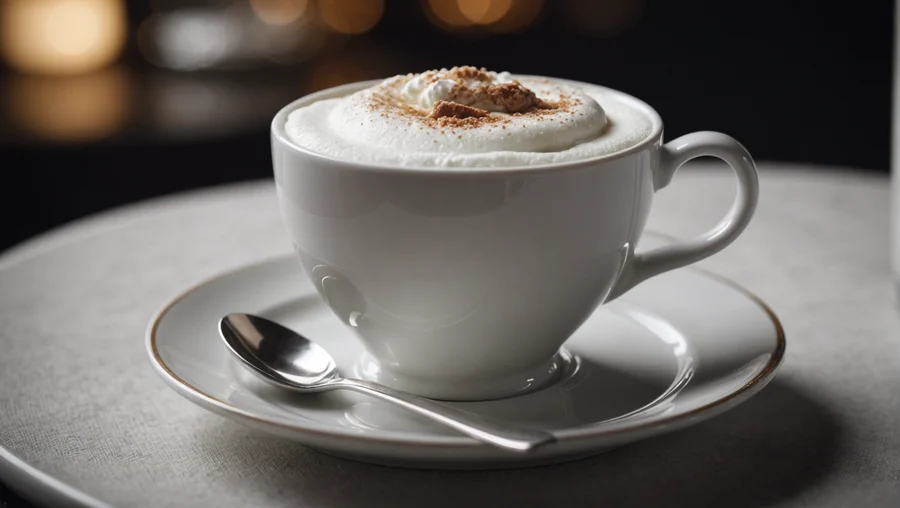
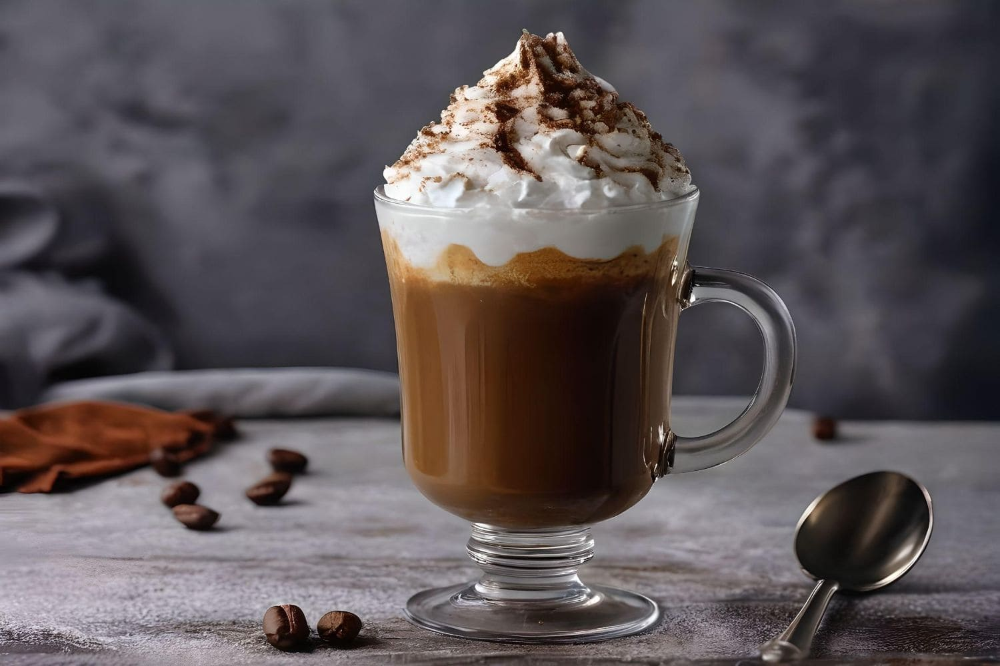
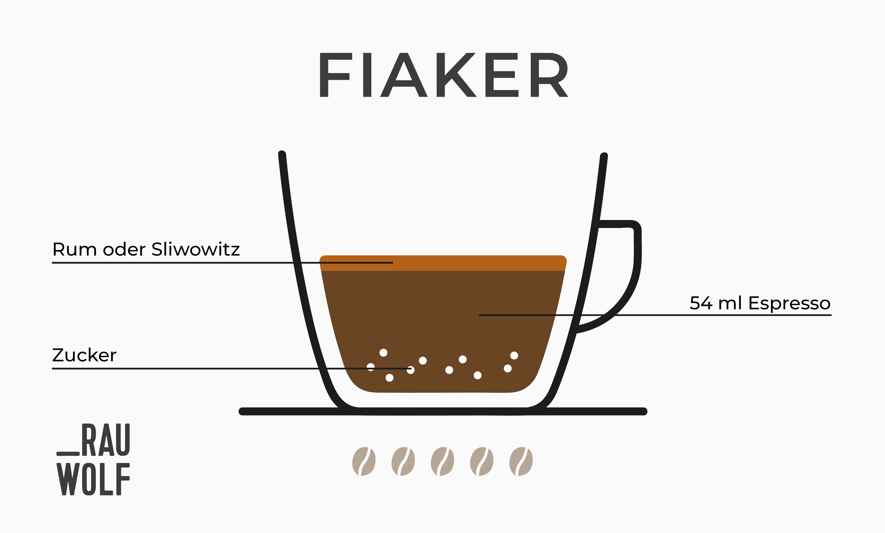

Süßspeisen
Apfelstrudel
Gebackener Strudel mit Apfelfüllung, oft mit Vanillesauce oder Schlagobers serviert.
Sachertorte
Schokoladenkuchen mit Aprikosenmarmelade und Schokoladenglasur. Schmeckt sehr gut in kombination mit Schlagobers.

Würzige Rindssuppe mit geschnittenen Palatschinkenstreifen.
Panierte und gebratene Kalbsschnitzel, traditionell mit Kartoffeln serviert, oft auch mit Pommes.
Gekochtes Rindfleisch, meist mit Röstkartoffeln und Gemüse serviert.
Gebackener Strudel mit Apfelfüllung, oft mit Vanillesauce oder Schlagobers serviert.
Schokoladenkuchen mit Aprikosenmarmelade und Schokoladenglasur. Schmeckt sehr gut in kombination mit Schlagobers.
Ein traditioneller Wiener Kaffee, der zu gleichen Teilen Espresso und Milch besitzt. Zudem hat er einen mildern Kaffee als z.B. Cappuccino. Beim Cappuccino ist das verhältnis von Milch und Espresso 2/3 Milch zu 1/3 Espresso.
Ein starker schwarzer Kaffee, der in einem hohen Glas serviert und mit einer dicken Schicht Schlagobers bedeckt wird.
Das Kaffeegetränk, häufig als doppelter Espresso mit einem Schuss Alkohol, wie z.B. Rum, serviert, ist eine beliebte Wahl in den Wiener Kaffeehäusern. Oft wird er auch mit einer Portion Schlagobers oben drauf serviert.
